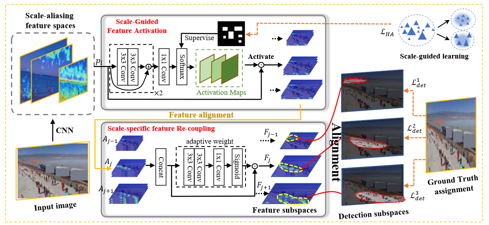
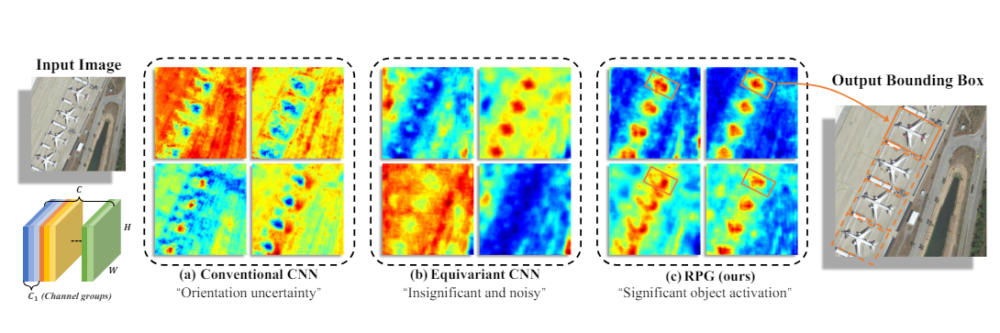
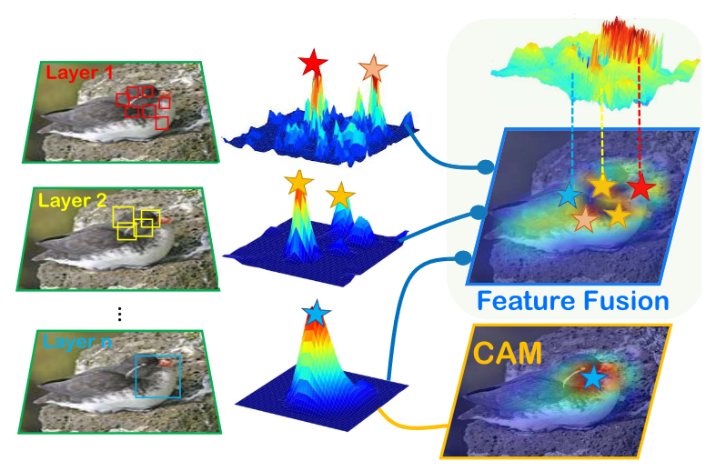
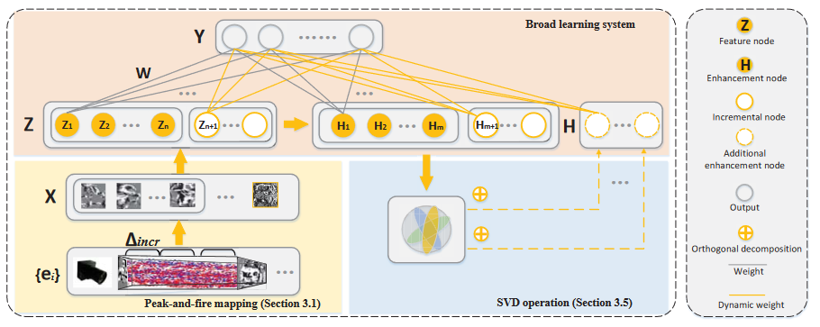

Guangqian GuoPh.D. candidateUnmanned Systems Technology Research Institute Northwestern Polytechnical University Xi'an, China. Email: guogq21@mail.nwpu.edu.cn; |
|
Biography
I am a Ph.D. candidate at the Unmanned Systems Technology Research Institute, Northwestern Polytechnical University (NWPU). My research interests include visual perception and weakly-supervised learning, specifically for Tiny Object Detection, Foundation-Model-based Scene Perception, and Weakly/Point-supervised Object Detection .
Recent News
2024/04 I have one conference paper (first author) accepted by IJCAI-24.
2024/02 I have one journal paper (co-first author) accepted by TGRS.
2023/05 I have one journal paper (first author) accepted by TCSVT.
Publications
| Guangqian Guo, Dian Shao, Chenguang Zhu, Sha Meng, Xuan Wang, Shan Gao
P2P: Transforming from Point Supervision to Explicit Visual Prompt for Object Detection and Segmentation INTERNATIONAL JOINT CONFERENCE ON ARTIFICIAL INTELLIGENCE (IJCAI), 2024 |
|
|  | Guangqian Guo, Pengfei Chen, Xuehui Yu, Zhenjun Han, Qixiang Ye, Shan Gao
HANet: Save the Tiny, Save the All: Hierarchical Activation Network for Tiny Object Detection IEEE Transactions on Circuits and Systems for Video Technology (TCSVT), 2023 |
|  | *Chaowei Wang, *Guangqian Guo, Chang Liu, Dian Shao, Shan Gao
Effective Rotate: Learning Rotation-robust Prototype for Aerial Object Detection * Equal Contribution IEEE Transactions on Geoscience and Remote Sensing (TGRS), 2024 |
|  | Shan Gao (Ph.D. advisor), Guangqian Guo, Hanqiao Huang, C. L. Philip Chen
Go deep or broad? Exploit hybrid network architecture for weakly supervised object classification and localization IEEE Transactions on Neural Networks and Learning Systems (TNNLS), 2023 |
|  | Shan Gao, *Guangqian Guo, C. L. Philip Chen
* Work as Intern Student IEEE International Conference on Computer Vision Workshop (ICCVW), 2019 |